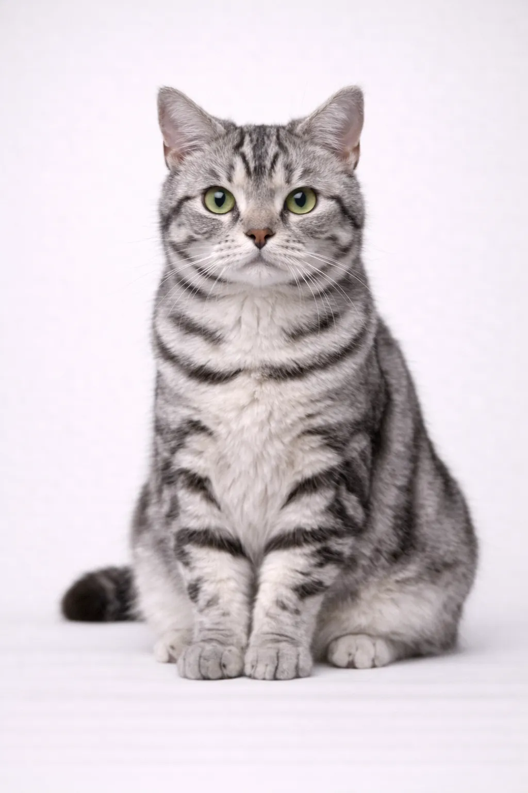

Kurzhaar
Mittel
Amerikanisch Kurzhaar
Herkunft
USA
Lebenserwartung
15-20 Jahre
Gewicht
4-6 kg
9-13 lbs
Fell
Verschiedene
Rassebewertungen
Zuneigung4/5
Aktivitätslevel3/5
Pflegebedarf1/5
Lautstärke2/5
Unabhängigkeit4/5
Kinderfreundlich5/5
Hundefreundlich5/5
Intelligenz4/5
Temperament
Gelassen
Freundlich
Anpassungsfähig
Verspielt
Über die Amerikanisch Kurzhaar
Amerikanisch Kurzhaar sind die Rasseversion der Hauskatze - athletisch, anpassungsfähig und großartige Familienkatzen.
Ist diese Rasse richtig für Sie?
Ideal für
- Familien
- Erstbesitzer
- Jeden Haushalt
Nicht ideal für
- Menschen, die exotisches Aussehen suchen